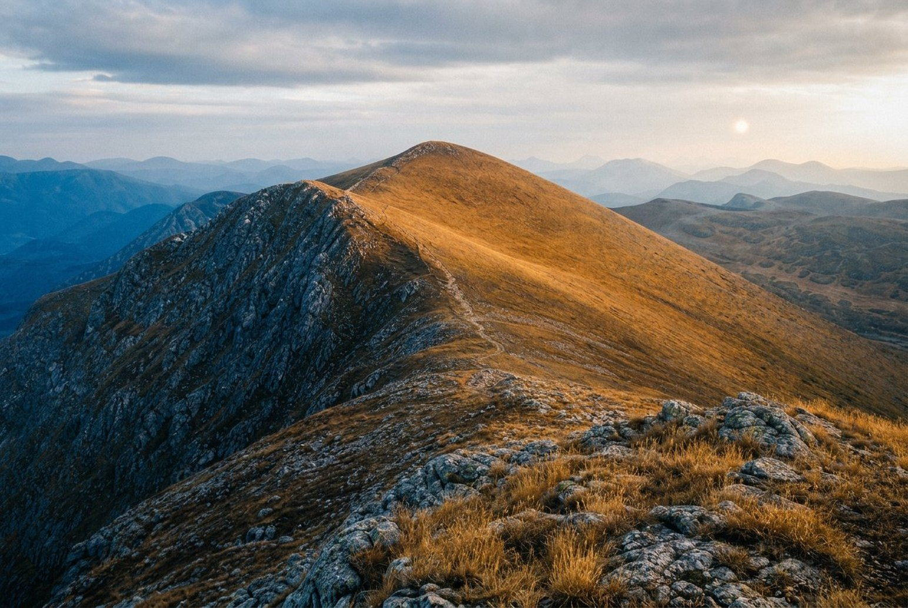

01English-speaking assistant
Every step of the trip, in your language. Questions, changes, small talk on the trail.

Beloretsk · Southern Urals · Russia
Old mountains, wide ridges and forests that go on for days. We are a small local team in Beloretsk and we take guests into these hills — with an English-speaking guide by your side from the first message to the last goodbye.
Full support
From the first message to the moment you board your bus home, an English-speaking assistant stays with you. No language barrier, no guessing.
Every step of the trip, in your language. Questions, changes, small talk on the trail.
We meet you in Ufa or Magnitogorsk and bring you to Beloretsk. Or meet you here.
We arrange accommodation with partners we trust and have worked with for years.
Arranged for every guest and already in the price. Nothing to sort out yourself.
Hot tea on the trail, a warm dinner after the descent. Dietary needs — just tell us.
A phone number that works, a person who answers, help with anything on the way.
One message is enough. Tell us when you arrive and how many of you there are — we will plan the rest. Write or call →
The region
Some of the oldest mountains on Earth — worn smooth by time, covered in forest, opening into long ridges you can walk for hours without meeting anyone.

Beloretsk sits in a ring of hills on the Belaya River. Step out of town and the road starts climbing; twenty minutes later you are above the treeline with nothing but ridges to the horizon.
This is not the Alps — and that is exactly the point. The Urals are wide, quiet and empty. Quartzite ridges, stone rivers, cold clear water, and the smell of pine after rain. Places where you walk all day and see three people.
The region is also home to Bashkir culture — the food alone is worth the trip. Ask us about it.
Example tour · one day
Our most popular day out. A quad bike takes you up the rocky road, then six kilometres on foot to the highest point of the ridge — 1 297 m, with a view over the whole Southern Urals.
Included: transport on the route, the quad bike ride, a guide, a hot dinner in Otunrok and insurance. Children under 5 are not allowed on quad bikes — a safety rule, not a preference.
The day starts in Beloretsk at 07:45 and ends around 19:00. If you are coming from Ufa or Magnitogorsk, we can arrange the transfer and a place to stay the night before.

Getting here
We meet you in Ufa and bring you to Beloretsk by car. About three hours of road. You can also take the bus — we will meet you at the station.
Ask us for detailsThe closest city — 85 km, about 1.5 hours. We pick you up at the bus station and bring you back the same evening. Day trips from Magnitogorsk start at 4 500 ₽ for adults, 4 000 ₽ for children 5–12 — the road is included.
Ask us for detailsAlready here, or travelling on your own? We meet you in town, and the tour starts from there. No transfer needed.
Ask us for detailsAccommodation. We work with partners we trust — guest houses and small hotels in Beloretsk and around. Tell us your dates and budget, and we will arrange it together with the tour.

Your guide
Founder of Aida Beloretsk · certified guide and instructor
He leads every trip personally. Not a manager on the phone and not a contractor — the person who chooses the trail, checks the weather and walks with you.
Years of mountaineering behind him, including Lenin Peak — 7,134 metres. A habit of bringing the whole group back, every time. When you call, you speak to him; he is the one who takes you into the hills.
There are no permits needed for the routes themselves. What you need to enter Russia depends on your country — check your visa requirements before booking. We can send you an itinerary and a booking confirmation for your application.
No. Our day tours are made for first-timers. The pace is set by the slowest person in the group, and the guide stays with everyone.
Yes. The nearest airports are Ufa and Magnitogorsk. We arrange transfers from either of them — tell us your flight and we will plan around it.
Yes. We work with trusted partners — guest houses and small hotels. We can book it together with your tour or suggest options if you prefer to book yourself.
A hot dinner is included on the quad tour, and tea on the trail. Tell us about allergies or dietary needs in advance and we will adjust.
In cash in Beloretsk before the tour, or by bank transfer in advance. We take no prepayment from new guests for day tours — you pay when you meet the guide.
Insurance is arranged for every guest and included in the price. The guide carries a first aid kit and a radio, checks the weather before every trip, and will reschedule if conditions are unsafe.
Sturdy shoes, warm layers, a rain jacket. We send a full list after you book. Nothing technical is needed.
Get in touch
Write or call, in English. We will help with the transfer, the place to stay and the route — and walk with you every step of the way.
+7 (XXX) XXX-XX-XXDaily, 9:00–21:00 (UTC+5). We answer within 15 minutes.